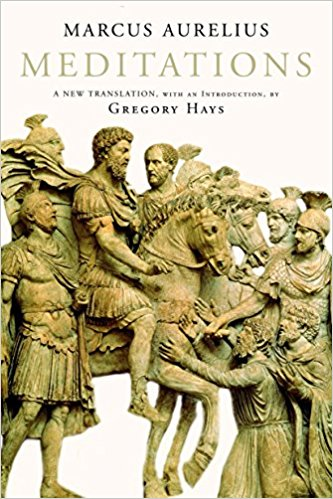

|

|
Title : Meditations
Author : Marcus Aurelius
Release date : Unknown
Acquire it now
Meditations is a series of personal writings by Marcus Aurelius, Roman Emperor 161–180 CE, setting forth his ideas on Stoic philosophy.Marcus Aurelius wrote the 12 books of the Meditations in Koine Greek as a source for his own guidance and self-improvement. It is possible that large portions of the work were written at Sirmium, where he spent much time planning military campaigns from 170 to 180. Some of it was written while he was positioned at Aquincum on campaign in Pannonia, because internal notes tell us that the second book was written when he was campaigning against the Quadi on the river Granova (modern-day Hron) and the third book was written at Carnuntum. It is not clear that he ever intended the writings to be published, so the title Meditations is but one of several commonly assigned to the collection. These writings take the form of quotations varying in length from one sentence to long paragraphs.
|